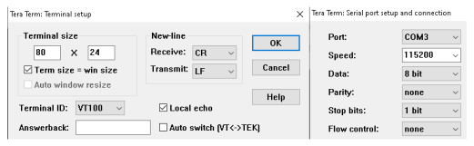
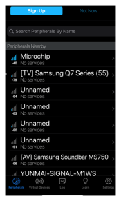
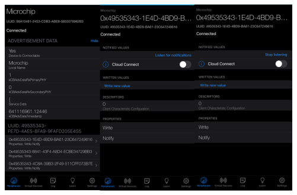
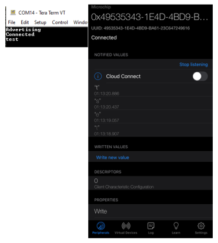
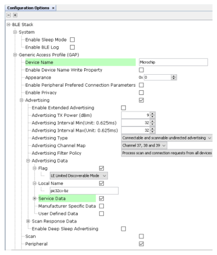
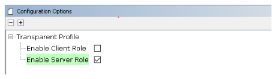
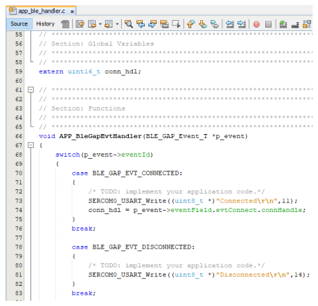
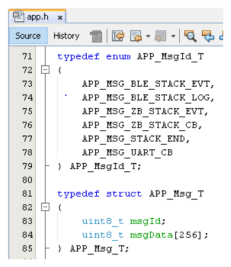

3.1.2.6 BLE Transparent UART
Getting Started with Peripheral Building Blocks
Introduction
This section will help users create a peripheral device and send/receive characters between 2 connected BLE devices over Microchip proprietary Transparent UART Profile. Peripheral device will be WBZ451 Device and Central device can either be a Smartphone with Light Blue App or another WBZ451 Device. The instructions mentioned below are applicable for a BLE Peripheral device.
Users can choose to just run the precompiled Application Example hex file on the WBZ451 Curiosity board and experience the demo or can go through the steps involved in developing this Application from scratch.
It is recommend to follow the examples in order, by learning the basic concepts first and then progressing to the more advanced topics.
Recommended Reading
Hardware Requirement
| Tool | Qty |
|---|---|
| WBZ451 Curiosity Board | 1 |
| Micro USB cable | 1 |
SDK Setup
Software Requirement
Smartphone App
Light Blue
Programming the precompiled hex file or Application Example
Programming the hex file using MPLABX IPE
Precompiled Hex file is located in "<Harmony Content Path>\wireless_apps_pic32cxbz2_wbz45\apps\ble\building_blocks\peripheral\profiles_services\peripheral_trp_uart\hex" folder
Follow the steps mentioned here
Programming the Application using MPLABX IDE
Follow steps mentioned in of Running a Precompiled Example document
Open and program the Application Example
"peripheral_trp_uart.x" located in "<Harmony Content Path>\wireless_apps_pic32cxbz2_wbz45\apps\ble\building_blocks\peripheral\profiles_services\peripheral_trp_uart\firmware"using MPLABX IDE
For more details on how to find the Harmony Content Path, refer to Installing the MCC Plugin
Demo Description
Upon programming the demo application, WBZ451 will start Advertising (connectable), central device (Smartphone or another WBZ451) scanning for these advertisements will connect to the device. In case of using Light Blue App search for “Microchip” and connect. After a connection has been made data can be sent back and forth over UART between the two devices that are connected. Demo will print start of the advertisement “Advertising”, connection “BLE Scanning”, “Connected” and “Disconnected” state on a terminal emulator like TeraTerm @ (Speed: 115200, Data: 8-bit, Parity: none, stop bits: 1 bit, Flow control: none). Application Data to be sent to the connected central device (Smartphone or another WBZ451) should be entered in the terminal emulator.
Testing
This section assumes that user has programmed the Application Example on the WBZ451 Curiosity Board Demo Experience when using a Smartphone (Light Blue App) as Central Device
- Reset the WBZ451 Curiosity board, Open Terminal emulator like Tera Term, select the right COM port@ (Speed: 115200, Data: 8-bit, Parity: none, stop bits: 1 bit, Flow control: none).
- Open Light Blue App on your smartphone, Search and select the advertisement with Device Name "Microchip"
- To receive data from WBZ451 Curiosity Board (peripheral) device to central device, users need to select the UUID: 49535343-1E4D-4BD9-BA61-23C647249616 and select listen for notifications
- Enter "test" on Teraterm and data should be displayed on Light Blue App
To send data from central device to WBZ451 Curiosity Board (peripheral), users need to select the UUID: 49535343-8841-43F4-A8D4-ECBE34729BB3 and select write new value
- Enter trp uart on App and data must be displayed on Terminal Window

Demo Experience when using another WBZ451 as Central device. Users can use another WBZ451 Curiosity Board configured as BLE Transparent UART(central) instead of using a Smartphone App as the central device.
Developing the Application from Scratch using the MPLAB Code Configurator
This section explains the steps required to develop this application example from scratch using MPLABx Code Configurator
-
Create a new MCC Harmony Project. For more details on how to create a new MCC Harmony Project, refer to 2.5 Creating a New MCC Harmony Project.
-
Import component configuration --This step helps users setup the basic components and configuration required to develop this application. The imported file is of format .mc3 and is located in the path "<Harmony Content Path>\wireless_apps_pic32cxbz2_wbz45\apps\ble\building_blocks\peripheral\profiles_services\peripheral_trp_uart\firmware\peripheral_trp_uart.X". Users should follow the instructions mentioned here to import the component configuration.
-
Accept Dependencies or satisfiers, select Yes
Verify if the Project Graph window has all the expected configuration
Note: Make sure that the macro "configUSE_TICKLESS_IDLE" is set to 0. The macro is available in FreeRTOSConfig.h file#define configUSE_TICKLESS_IDLE 0
Verifying Advertisement,Connection and Transparent UART Profile Configuration
- Select BLE_Stack component in project graph
- Select Transparent Profile component in project graph
Generating a Code
For instructions on generating a code, refer to 14.2 MPLAB Code Configurator(MCC) Code Generation.
Files and Routines Automatically generated by the MCC
| Source Files | Usage |
|---|---|
| app.c | Application State machine, includes calls for Initialization of all BLE stack (GAP,GATT, SMP, L2CAP) related component configurations |
| app_ble\app_ble.c | Source Code for the BLE stack related component configurations, code related to function calls from app.c |
| app_ble\app_ble_handler.c | All GAP, GATT, SMP and L2CAP Event handlers |
| app_ble\app_trsps_handler.c | All Transparent UART Server related Event handlers |
| ble_trsps.c | All Transparent Server Functions for user application |
Note: app.c is autogenerated and has a state machine based Application code sample, users can use this template to develop their application
Header Files
ble_gap.h: This header file contains BLE GAP functions and is automatically included in the app.c fileble_trsps.h: This header file associated with API’s and structures related to BLE Transparent Client functions for Application User.
Function Calls
MCC generates and adds the code to initialize the BLE Stack GAP, GATT, L2CAP and SMP in APP_BleStackInit() function
APP_BleStackInit() is the API that will be called inside the Applications Initial State -- APP_STATE_INIT in app.c
User Application Development
Include
"ble_trsps.h"in app.c, BLE Transparent UART Server related API's are available here"
osal/osal_freertos_extend.h" in app_trsps_handler.c, OSAL related API's are available heredefinitions.hin all the files where UART will be used to print debug information Tip: definitions.h is not specific to just UART peripheral, instead it should be included in all application source files where peripheral functionality will be exercisedUser action is required as mentioned 14.1 User Action
Set PUBLIC Device Address
BLE_GAP_SetDeviceAddr(&devAddr);
BLE_GAP_Addr_T devAddr;
devAddr.addrType = BLE_GAP_ADDR_TYPE_PUBLIC;
devAddr.addr[0] = 0xA1;
devAddr.addr[1] = 0xA2;
devAddr.addr[2] = 0xA3;
devAddr.addr[3] = 0xA4;
devAddr.addr[4] = 0xA5;
devAddr.addr[5] = 0xA6;
// Configure device address
BLE_GAP_SetDeviceAddr(&devAddr);Starting Advertisement
- BLE_GAP_SetAdvEnable(0x01, 0);
Connected & Disconnected Events
In app_ble_handler.c BLE_GAP_EVT_CONNECTED event will be generated when a BLE connection is completed
Connection Handler
Connection handle associated with the peer peripheral device needs to be saved for data exchange after a BLE connection
p_event->eventField.evtConnect.connHandle has this information

Transmit Data
- Add "APP_MSG_UART_CB" to the generated APP_MsgId_T
BLE_TRSPS_SendData(conn_hdl , 1, &data); is the API to be used for sending data towards the central device Note: The precompiled application example uses a UART callback to initiate the data transmission upon receiving a character on UART
Example Implementation for Transmitting the received data over UART using the BLE_TRSPS_SendData() API
uint16_t conn_hdl;// connection handle info captured @BLE_GAP_EVT_CONNECTED event
uint16_t ret;
uint8_t uart_data;
void uart_cb(SERCOM_USART_EVENT event, uintptr_t context)
{
APP_Msg_T appMsg;
// If RX data from UART reached threshold (previously set to 1)
if( event == SERCOM_USART_EVENT_READ_THRESHOLD_REACHED )
{
// Read 1 byte data from UART
SERCOM0_USART_Read(&uart_data, 1);
appMsg.msgId = APP_MSG_UART_CB;
OSAL_QUEUE_Send(&appData.appQueue, &appMsg, 0);
}
}
void APP_UartCBHandler()
{
// Send the data from UART to connected device through Transparent service
BLE_TRSPS_SendData(conn_hdl, 1, &uart_data);
}
// Register call back when data is available on UART for Peripheral Device to send
// Enable UART Read
SERCOM0_USART_ReadNotificationEnable(true, true);
// Set UART RX notification threshold to be 1
SERCOM0_USART_ReadThresholdSet(1);
// Register the UART RX callback function
SERCOM0_USART_ReadCallbackRegister(uart_cb, (uintptr_t)NULL);else if(p_appMsg->msgId==APP_MSG_BLE_STACK_LOG)
{
// Pass BLE LOG Event Message to User Application for handling
APP_BleStackLogHandler((BT_SYS_LogEvent_T *)p_appMsg->msgData);
}
else if(p_appMsg->msgId==APP_MSG_UART_CB)
{
// Pass BLE UART Data transmission target BLE UART Device handling
APP_UartCBHandler();
}Receive Data
BLE_TRSPS_EVT_RECEIVE_DATA is the event generated when data is sent from central device
Use the BLE_TRSPS_GetDataLength(p_event->eventField.onReceiveData.connHandle, &data_len; API to extract the length of application data received
BLE_TRSPS_GetData(p_event->eventField.onReceiveData.connHandle, data); API is used to retrieve the data
Example Implementation for printing the received data from central device over UART
/* TODO: implement your application code.*/
uint16_t data_len;
uint8_t *data;
// Retrieve received data length
BLE_TRSPS_GetDataLength(p_event->eventField.onReceiveData.connHandle, &data_len);
// Allocate memory according to data length
data = OSAL_Malloc(data_len);
if(data == NULL)
break;
// Retrieve received data
BLE_TRSPS_GetData(p_event->eventField.onReceiveData.connHandle, data);
// Output received data to UART
SERCOM0_USART_Write(data, data_len);
// Free memory
OSAL_Free(data);Users can exercise various other BLE functionalities by usingBLE Stack API
Where to go from here
Advanced Application (BLE Sensor App) - BLE Sensor App utlizes the Transparent UART building block.